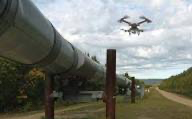
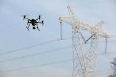
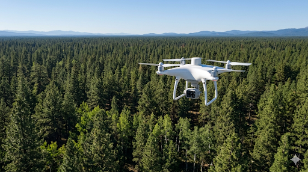
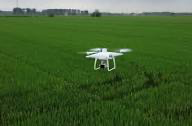
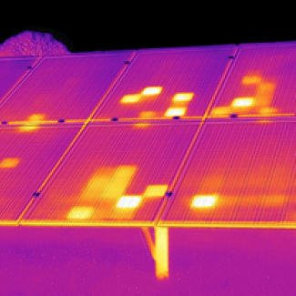
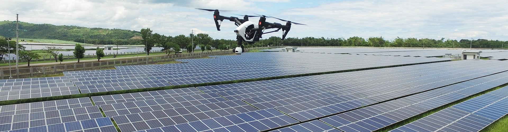
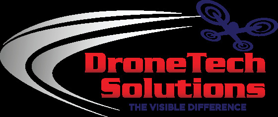
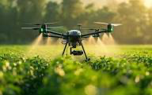
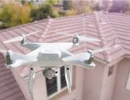
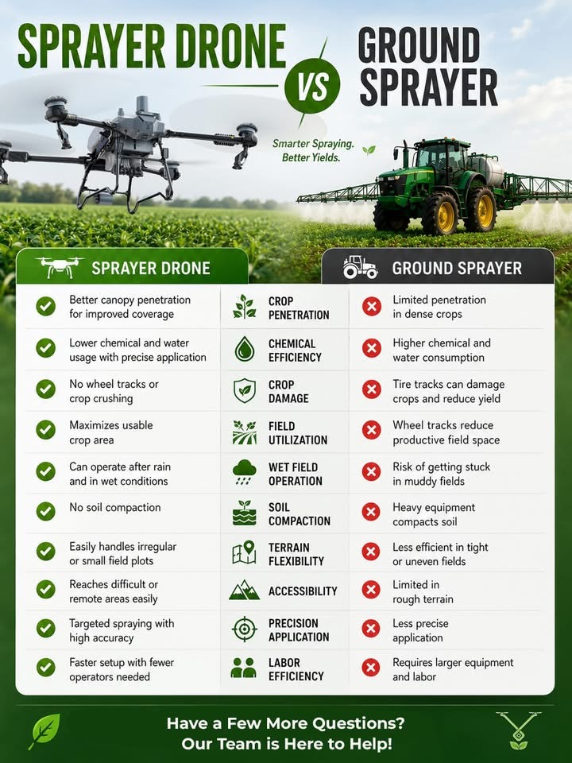

Operational Gallery
A glimpse into our aerial operations, agricultural applications, and inspection work.








Advanced UAS technology backed by decades of public‑service leadership. Delivering agricultural and industrial drone operations across Southeast Texas.
Actionable data, precise application, and operational reliability for landowners, farmers, and industrial partners.

Multispectral imaging and aerial application technology designed to optimize crop health, reduce waste, and maximize ROI.

Reliable, data‑driven aerial solutions tailored to complex operational requirements across residential, commercial, and industrial environments.
Comprehensive aerial solutions for agriculture, industry, and infrastructure.
Precision application for crops, pastures, and aquatic environments.
Crop health, moisture analysis, and vegetation indexing.
Solar farms, electrical systems, and industrial heat signatures.
Safe, efficient monitoring of critical infrastructure.
High‑resolution imaging for utility maintenance.
Residential and commercial aerial assessments.
Led by seasoned public‑service professionals who bring discipline, safety, and operational integrity to every mission.
FAA Part 107 remote pilots and TDA‑licensed commercial pesticide applicators ensure compliance, precision, and safety.
Deeply committed to Southeast Texas agriculture and industry, with a focus on long‑term relationships and reliable results.
From crop health to asset inspection, we deliver actionable insights—not just imagery—so you can make confident decisions.

With 30 years of dedicated public fire service, Ronnie retired as a Battalion Chief in 2019. Now serving as a law enforcement officer, he brings integrity, clear communication, and operational excellence to every project.
As a certified FAA Part 107 UAS remote pilot and TDA Certified Commercial Pesticide Applicator, Ronnie is driven by precision, efficiency, and innovative, data‑driven solutions for Southeast Texas landowners and industry partners.
Jake is a Captain with the Beaumont Fire Department, bringing over a decade of high‑stakes emergency management and leadership experience.
An experienced pilot, FAA UAS remote pilot, and TDA Certified Commercial Pesticide Applicator, Jake focuses on delivering reliable, high‑quality results built on experience, trust, and professional integrity.
A glimpse into our aerial operations, agricultural applications, and inspection work.






Proudly serving Southeast Texas and surrounding regions.

Full rate sheets and project‑specific quotes are available upon request.
40‑acre minimum applies.
40‑acre minimum applies.
"DroneTech Solutions delivered fast, accurate spraying that saved us time and money."
— Local Rancher"Their mapping helped us identify crop stress early. Highly professional team."
— Agricultural Client"Reliable, safe, and extremely knowledgeable. We trust them with our inspections."
— Industrial Partner